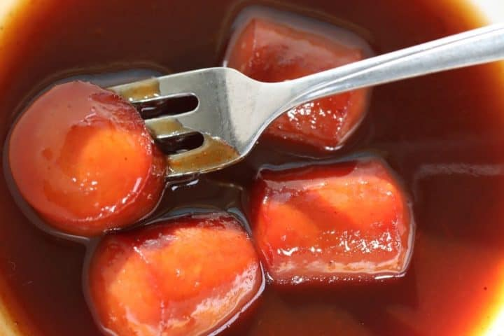

Nana's Saucy Weiners
Return to Homepage

Nana's Saucy Weiners
A simple and delicious dish of hot dogs with a sweet and tangy sauce. Perfect over noodles or rice.
Modified from Nana K's recipes. Sauce ingredients have been doubled
Ingredients
- 1 lb. wieners, sliced into 1/2" pieces
- 1 onion, thinly sliced
- 2 tbsp. mustard
- 2 tbsp molasses
- 1/2 c. barbecue sauce (substitute ketchup for less spice)
- 1/2 c. sweet chili sauce
- 1/2 c. water
- Cooked rice or noodles (rotini or egg noodles are a family favorite)
Instructions
- In a saucepan, saute weiners and onion over medium-high heat until weiners browned and onion translucent
- Combine sauce ingredients: mustard, molasses, barbecue sauce (or ketchup), sweet chili sauce, and water.
- Pour sauce into saucepan with wieners and onions
- Cover and simmer for 10 min, stirry occasionally
- Serve on hot noodles or rice